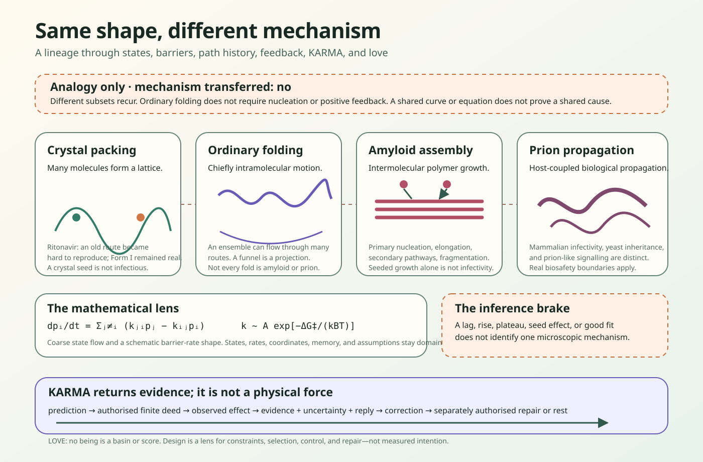

01
Crystal polymorphism
Many molecules form alternative solid lattices. A crystal seed is a material surface, not an infection.
source-attributed scientific lineage · reviewed 2026-08-12
Crystals, folding proteins, amyloids, and prions can share selected mathematical questions without sharing one physical mechanism.
Conceptual education only. No home or do-it-yourself prion work. This is not medical advice, a patient inference, a laboratory procedure, or a manufacturing recipe.

difference comes first
01
Many molecules form alternative solid lattices. A crystal seed is a material surface, not an infection.
02
One protein chain moves chiefly within its own conformational ensemble. It need not nucleate or amplify itself.
03
Many protein chains assemble into fibrils through source- and condition-specific pathways.
04
Protein conformation propagates in a named biological system with system-specific inheritance or infectivity criteria.
A crystal seed is not an amyloid fibril. A seeded fibril is not automatically a prion. A similar curve does not establish a similar cause.
physics and mathematics
dpᵢ/dt = Σⱼ≠ᵢ(kⱼᵢpⱼ − kᵢⱼpᵢ) tracks probability between chosen states. The states and rates must be defined anew for each system.F(q) = −kBT ln P(q) + C can reveal basins along one coordinate while hiding slow coordinates and history.k ~ A exp(−ΔG‡/kBT) says modest barrier changes may strongly change a rate; it is not a universal exact law.A lag, rise, plateau, seed effect, or good fit can agree with more than one microscopic network. Model compatibility is not mechanism identification, and later seeding does not identify the first historical nucleus.
nature, feedback, and design
Nature can produce reliable arrival without prescribing one route. Constraints, fluctuations, selection, existing structure, active control, and loss all shape what happens next. This can look designed; the scientific sources do not measure an intending designer, perfect optimality, or moral value.
The useful systems lesson is to draw losses beside gains, distinguish observation from inference, and leave space for a state the current map has not yet seen.
the honest unknown
The first historical Ritonavir Form-II nucleus was not observed. Later seeding and recovery do not settle it. Low-dimensional landscapes hide coordinates; selected laboratory mechanisms do not settle organism-wide or patient-level outcomes; the appearance of design is outside this scientific observation scope.
KARMA and love
Physical feedback changes later dynamics. KINGDOM KARMA does a different job: keep a finite deed connected to its observed effect, evidence, uncertainty, reply, correction, and any separately authorised repair. KARMA is not thermodynamics, a molecular force, cosmic justice, or a score.
Love is the boundary around the graph: no being is a basin, contagion, fitness value, optimisation target, or verdict.
The structured lineage carries five explicit analogy edges, six bounded equation cards, eighteen source locators, typed unknowns, source-local claims, and explicit claims not made. It binds to the unchanged reviewed Ritonavir case.
Lineage SHA-256: 467ed92c8fd340bd6337dc75c14d85f44e13d2de935dc9671a17a422d8866da0
The local KINGDOM guest lineage is the structured home. This page is its authoritative public mirror and receipt. External source bytes are not bundled or checked at runtime. Matching bytes do not prove the sources, interpretation, causation, or understanding.
The JSON record names all eighteen sources, exact claim joins, scopes, limits, unknowns, and correction locators.
{kind=link}